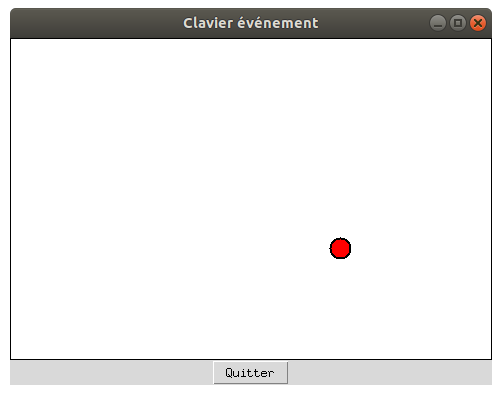

Evénements clavier
Dans cette activité, nous allons déplacer un pion sur une surface Canvas en utilisant les touches du clavier pour le diriger.

Mais tout de suite, regardons le programme :
import tkinter as tk
# Variables globales
## Constantes
LARGEUR = 480
HAUTEUR = 320
## Position initiale du pion
pos_x = 230
pos_y = 150
def clavier(event):
""" Gestion de l'événement Appui sur une touche du clavier """
global pos_x, pos_y
touche = event.char
# déplacement vers le haut
if touche == 'a':
pos_y -= 20
# déplacement vers le bas
if touche == 'q':
pos_y += 20
# déplacement vers la droite
if touche == 'm':
pos_x += 20
# déplacement vers le haut
if touche == 'l':
pos_x -= 20
# on dessine le pion à sa nouvelle position
surface_dessin.coords(pion, pos_x-10, pos_y-10, pos_x+10, pos_y+10)
# Création de la fenêtre principale
# Création de la fenêtre principale (main window)
mon_app = tk.Tk()
mon_app.title('Clavier événement')
# Création d'un widget Canvas (zone graphique)
surface_dessin = tk.Canvas(mon_app, width=LARGEUR, height=HAUTEUR, bg='white')
surface_dessin.grid(row=0, column=0)
surface_dessin.focus_set()
# Création du pion sur la surface
pion = surface_dessin.create_oval(pos_x-10, pos_y-10, pos_x+10, pos_y+10, width=2, fill='red')
# La méthode bind() permet de lier un événement avec une fonction :
# un appui clavier provoquera l'appel de la fonction clavier()
surface_dessin.bind('<Key>', clavier)
# Création d'un widget Button (bouton Quitter)
tk.Button(mon_app, text = 'Quitter', command = mon_app.destroy).grid(row=1, column=0)
mon_app.mainloop()
Explications
Tout d'abord, les coordonnées du pion sont stockées dans les variables globales pos_x et pos_y.
La fonction clavier() a pour rôle de les actualiser en fonction de la
touche qui a été pressée.
Pour associer l'appel de la fonction Clavier() lorsqu'une touche est
pressée, le principe est le même que pour le clic de souris :
on appelle la méthode bind() associée à la surface de dessin.
L'événement qui nous intéresse ici est désigné par <Key>.
Une petite subtilité ici cependant : pour que la surface capture les événements clavier, il faut qu'elle soit sélectionnée (qu'elle ait le focus comme on dit). On lui donne le focus grâce à la commande
surface_dessin.focus_set()
Nous avons déjà rencontré cette méthode lorsque l'on voulait passer le contrôle à un champ de saisie, le principe est ici le même.
La dernière chose qu'il reste à voir, c'est comment modifier les coordonnées de notre pion lorsque les
variables pos_x et pos_y ont été
ajustées. Cela se fait par l'appel :
surface_dessin.coords(pion, pos_x-10, pos_y-10, pos_x+10, pos_y+10)
pion est une variable globale créée par la commande create_oval().
A vous de jouer
Dans l'exemple ci-dessus, il n'y a pas de limite au déplacement du pion, même lorsque ce dernier sort du Canvas. Modifier le programme afin que s'il sort d'un coté de la fenêtre, il réapparaisse de l'autre, un peu comme dans le jeu du PacMan.
Une solution
import tkinter as tk
# Variables globales
## Constantes
LARGEUR = 480
HAUTEUR = 320
## Position initiale du pion
pos_x = 230
pos_y = 150
def clavier(event):
""" Gestion de l'événement Appui sur une touche du clavier """
global pos_x, pos_y
touche = event.char
# déplacement vers le haut
if touche == 'a':
pos_y = (pos_y - 20) % HAUTEUR
# déplacement vers le bas
if touche == 'q':
pos_y = (pos_y + 20) % HAUTEUR
# déplacement vers la droite
if touche == 'm':
pos_x = (pos_x + 20) % LARGEUR
# déplacement vers le haut
if touche == 'l':
pos_x = (pos_x - 20) % LARGEUR
# on dessine le pion à sa nouvelle position
surface_dessin.coords(pion, pos_x-10, pos_y-10, pos_x+10, pos_y+10)
# Création de la fenêtre principale
# Création de la fenêtre principale (main window)
mon_app = tk.Tk()
mon_app.title('Clavier événement')
# Création d'un widget Canvas (zone graphique)
surface_dessin = tk.Canvas(mon_app, width=LARGEUR, height=HAUTEUR, bg='white')
surface_dessin.grid(row=0, column=0)
surface_dessin.focus_set()
# Création du pion sur la surface
pion = surface_dessin.create_oval(pos_x-10, pos_y-10, pos_x+10, pos_y+10, width=2, fill='red')
# La méthode bind() permet de lier un événement avec une fonction :
# un appui clavier provoquera l'appel de la fonction clavier()
surface_dessin.bind('<Key>', clavier)
# Création d'un widget Button (bouton Quitter)
tk.Button(mon_app, text = 'Quitter', command = mon_app.destroy).grid(row=1, column=0)
mon_app.mainloop()